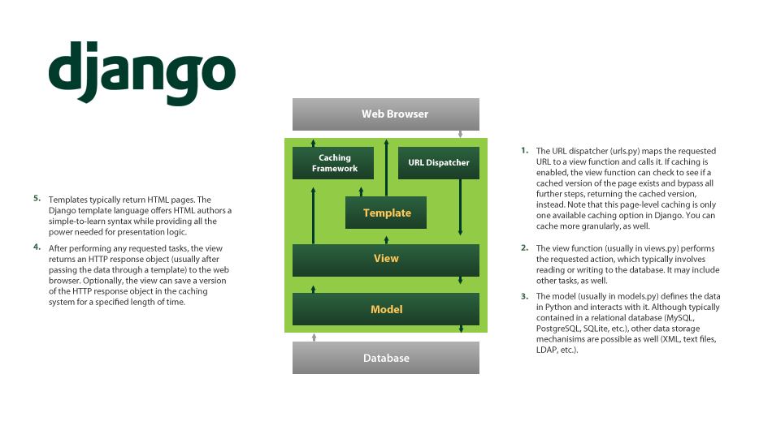
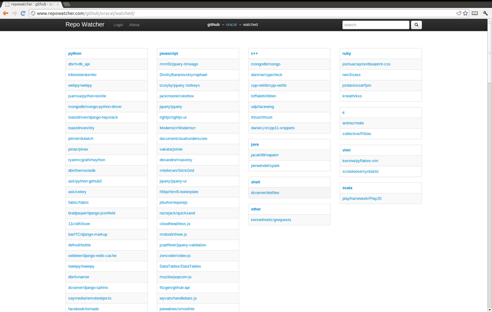

Django By Example
Thomas Whitton
2012/10/25
Django
The Web framework for perfectionist with deadlines
Django heavly adheres to the DRY principal
Allows you to rapidly create complex fully functional websites
So you've heard of MVC?
- Models
- Views
- Controllers
Django Architecture
Django instead uses a similar MTV pattern
- Models
- Templates
- Views
But this is just naming convention and is pretty much the MVC pattern
It can get a little confusing though
Django MTV Diagram
 Diagram by Jeff CroftDjango Example Project Structure
README
manage.py
fabfile.py
site/settings.py
site/wsgi.py
site/urls.py
site/app/models.py
site/app/forms.py
site/app/views.py
site/app/urls.py
site/app/middleware.py
site/app/templates/template.html
Django Example Application
Models
Models provide the business logic and state to an application
i.e. models are a form of data abstraction which separate out the state of data and the methods for manipulating that data from the rest of the application
Django does this via an Object Relational Mapper (ORM) which maps Python Classes to physical data stores, most commonly SQL databases
Example Model
class Repository(models.Model):
owner = CharField(max_length=100)
name = CharField(max_length=100)
slug = SlugField(max_length=201)
host_slug = SlugField(max_length=302, unique = True)
language = CharField(max_length=100, null = True)
html_url = URLField(null = True, max_length=400)
homepage = URLField(null = True, max_length=400)
watchers = PositiveIntegerField(null = True)
created_at = DateTimeField(null = True)
pushed_at = DateTimeField(null = True)
description = TextField(null = True)
extra_data = JSONField(null = True)
last_modified = DateTimeField(auto_now=True)
private = BooleanField(default = False)
scm = CharField(max_length=100, choices=SCM_CHOICES)
host = CharField(max_length=100, choices=HOST_CHOICES)
Example Model Continued
HOST_CHOICES = (('github', 'github'),
('bitbucket', 'bitbucket'))
SCM_CHOICES = (('git','git'),
('hg','mercurial'))
class Repository(models.Model):
...
scm = CharField(max_length=100, choices=SCM_CHOICES)
host = CharField(max_length=100, choices=HOST_CHOICES)
class Meta:
unique_together = ("owner", "name", "host")
ordering = ['-watchers']
def save(self, *args, **kwargs):
self.slug = self.owner.lower() + '/' + self.name.lower()
super(Repository, self).save(*args, **kwargs)
Generated SQL
CREATE TABLE "main_repository" (
"id" serial NOT NULL PRIMARY KEY,
"owner" varchar(100) NOT NULL,
"name" varchar(100) NOT NULL,
"slug" varchar(201) NOT NULL,
"host_slug" varchar(302) NOT NULL UNIQUE,
"language" varchar(100),
"html_url" varchar(400),
"homepage" varchar(400),
"watchers" integer CHECK ("watchers" >= 0),
"created_at" timestamp with time zone,
"pushed_at" timestamp with time zone,
"description" text,
"extra_data" text,
"last_modified" timestamp with time zone NOT NULL,
"scm" varchar(100),
"host" varchar(100) NOT NULL,
"private" boolean NOT NULL,
UNIQUE ("owner", "name", "host")
);
More Examples of Models
class RepositoryCategory(models.Model):
name = CharField(max_length=100)
class UserProfile(models.Model):
user = models.OneToOneField(User)
repositories = models.ManyToManyField(Repository,
through='UserRepositoryLink')
last_modified = DateTimeField(auto_now=True)
class LinkType(models.model):
name = CharField(max_length = 100, unique = True,
choices = LINK_TYPES)
class UserRepositoryLink(models.Model):
user = ForeignKey(UserProfile)
repository = ForeignKey(Repository)
order = PositiveIntegerField()
repository_category = ForeignKey(RepositoryCategory)
last_modified = DateTimeField(auto_now = True)
link_type = ForeignKey(LinkType)
"Making Queries"
repository_user = RepositoryUser.objects.get(slug="github/oracal")
repo_link_type, _ = LinkType.objects.get_or_create(name = "owned")
repositories = Repository.objects
.filter(watchers__isnull=False)
.all()[:50]
user = request.user
profile = user.get_profile()
link = UserRepositoryLink(user = profile,
repository = repository,
order = 1,
link_type = repo_link_type)
link.save()
links = profile.userrepositorylink_set
.filter(link_type = repo_link_type)
.filter(repository__host='bitbucket')
links.delete()
Templates
Templates provide the physical appearence of the current state of the data
i.e. templates have knowledge of the data format and can show its current state in a human readable way
In Django this is done by a simplistic templating language embedded within normal HTML code, with lots of convenience functions for displaying output
Example Template Code
(Without HTML)
{% for category, value in repositories_by_language %}
{% url github_watched_language_popular category %}
{{category}}
{% for repo in value %}
{% url github_repo repo.owner repo.name %}
{{ repo.owner }}/{{ repo.name }}
{% endfor %}
{% endfor %}
Cool Template Functions
{{event.payload.pull_request.additions|pluralize}}
{{event.payload.pull_request.title|truncatewords:35|urlize}}
{{wiki_page.action|capfirst}}
{{wiki_page.sha|slice:"7"}}
{{event.created_at|date:"r"}}
{{repository_user.name|title}}
{{repository_user.login|lower}}
{% if event.type == "IssueCommentEvent" %}
...
{% endif %}
Reusing Template Code
header.html
...
{% block title %}
{% endblock %}
{% block content %}
{% endblock %}
...
{% extends "header.html" %}
{% block title %}
...
{% endblock %}
{% block content %}
...
{% endblock %}
Views
Views bring everything else together
Views are the segments of code which connect the requests to the data, and then sends data back to the user interface
Views take in HTTP requests, interact with the models and then pass the models onto the templates
Views Continued
Django has a couple of forms of view syntax, the simplest is a function which takes in a request object as an argument and has to output an object derived from Django's HTTP Response Object
In practice Django provides lots of convenience functions to create HTTP response objects, so you don't have to
Example View Code
def index(request):
"""Home view, displays login mechanism"""
if request.user.is_authenticated():
return HttpResponseRedirect(reverse('authed'))
else:
return render_to_response('index.html')
def watched_popular(request):
repo_dict = defaultdict(list)
repos = Repository.objects.filter(watchers__isnull=False)
.filter(private=False).all()[:50]
for repo in repos:
repo_dict[repo.language].append(repo)
repo_dict = sorted(dict(repo_dict).iteritems(),
key=lambda (k, v): len(v), reverse = True)
return render_to_response('watched_popular.html',
{'repo_dict':repo_dict})
Example View Code Continued
def typeahead(request, value = None):
if value is None:
repos = Repository.objects.values('name').distinct()
users = Repository.objects.values('owner').distinct()
else:
repos = Repository.objects.filter(name__contains=value)
.values('name').distinct()
users = Repository.objects.filter(owner__contains=value)
.values('owner').distinct()
typeahead_list = []
for repo in repos:
typeahead_list.append(repo['name'])
for user in users:
typeahead_list.append(user['owner'])
return HttpResponse(json.dumps(typeahead_list),
mimetype="application/json")
Mapping
We now have a basis for requests coming in, being passed onto a view, manipulating models and sending them to the template to create a userinterface
What you might be asking yourself now is, how does Django know what view to send a particular request?
Django uses a mapping file called urls.py which maps html addresses to views, using regular expressions
urls.py
Seriously Simple
urlpatterns = patterns('repowatcher.main.views',
url(r'^$', 'index'),
url(r'^about/$', 'about'),
url(r'^github/(?P<username>[^/]+)/$', 'github_username'),
url(r'^github/repo/(?P<owner>[^/]+)/(?P<repo>[^/]+)/$',
'github_repo'),
url(r'^github/(?P<username>[^/]+)/starred/$',
'github_username_watched', {"link_type":"starred"},
'github_username_starred'),
url(r'', include('social_auth.urls')),
)
Navigating
Say you want a view to redirect to another url or you want to provide links in your html to other part of your site, what do you do? Hard coding is bad!
Django provides a couple of techniques to allow you to generate the url from the view itself or from an identifyer that you have given the view in the urls.py, reversing the regular expression
Reversing
Inside views
def anonymous_github_user(request):
username = request.GET.get('username', '')
return HttpResponseRedirect(reverse(github_username,
kwargs={'username': username}))
Inside templates
{% url github_repo repo.owner repo.name %}
{% url repowatcher.main.views.watched_popular %}
Middleware

Middleware Code
class Middleware(Object):
def process_response(self, request, response):
...
return response
def process_request(self, request):
...
# optional return, if you do return a response no other
# process request middleware will be called
return response
Other Cool Stuff
Some Cool Third Party Apps
- django-celery - distributed asynchronous task queue
- django-social-auth - user authentaication via social auth providers
- django-debug-toolbar - Django debugging and profiling made easy
- django-redis-cache - redis cache mechanism
- django-south - Django database migration
- django-tastypie - easily create REST API's